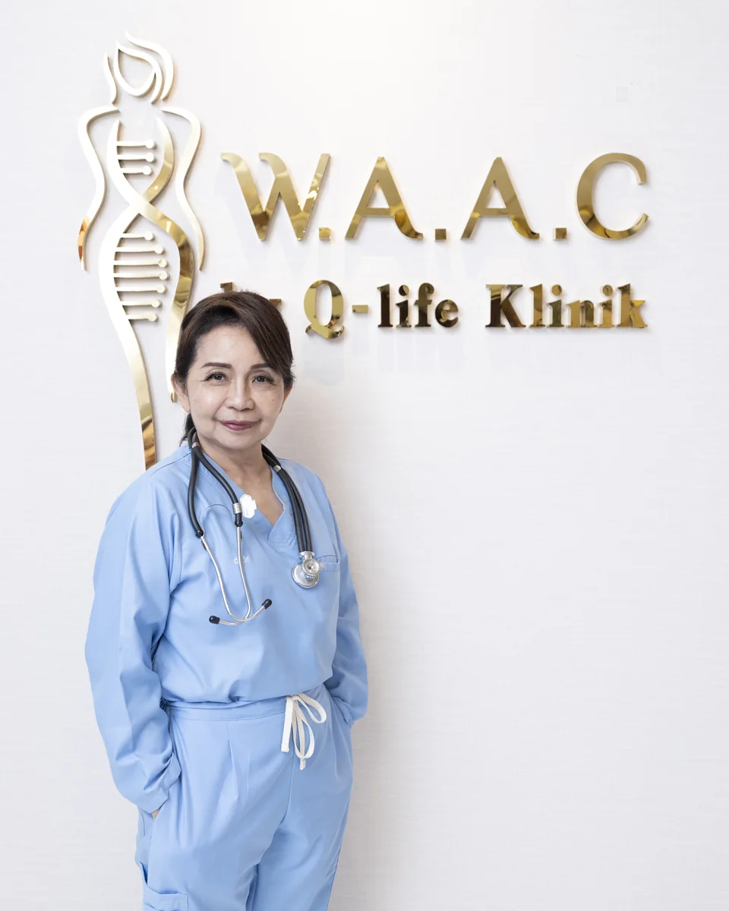

Q-Life · Medical

FK Universitas Airlangga · 1988
dr. Sri Budiwati, Dipl. iAAAM (Canada)
Palliative Care, Integrative Medicine & Anti-Aging Practitioner
Graduated from FK Universitas Airlangga 1988. Permanent speaker on Sangkakala 1062 AM radio for 9 years, now active on RRI 96.8 FM & 58.8 AM every Tuesday 18.00 WIB, as well as live JTV talk shows once a month.
PalliativeMedical consultationHealth radio